This data set contains crime rate data for the individual US states, including District of Columbia (Washington D.C.), coded in the variable state. The variables are violent crime rate (crime), murder rate (murder), percentage metropolitan (pctmetro), percentage high school graduates (pcths), percentage poverty (poverty), percentage single parents (single).
1a)
Make scatter plots with violent crime rate on the y-axis and percentage metropolitan or percentage single parents on the x-axis. Mark each point by the state initials.
Insert regression lines in each of the diagrams. Comment on the diagram. You see that Washington D.C. (dc) has a particularly high crime rate.
Note: One way how you can add labels (e.g. the state initials) to the data points in a scatter plot is to use the command text(), like so: text(y ~ x, labels = lab), where x and y are the variables on the x- and y-axis in the scatterplot and lab is the variable that we want to use for the labels.
crime_data <-read.csv('data/crime_mod.csv')# head(crime_data)par(mfrow =c(1, 2)) # make plots in 1 row 2 col# scatter plot: crime vs pctmetroplot(crime ~ pctmetro, pch=".", data = crime_data)text(crime ~ pctmetro, labels = state, data = crime_data)abline(lm(crime ~ pctmetro, data = crime_data), col ='blue')# scatter plot: crime vs singleplot(crime ~ single, pch='.', data = crime_data)text(crime ~ single, labels = state, data = crime_data)abline(lm(crime ~ single, data = crime_data), col ='blue')
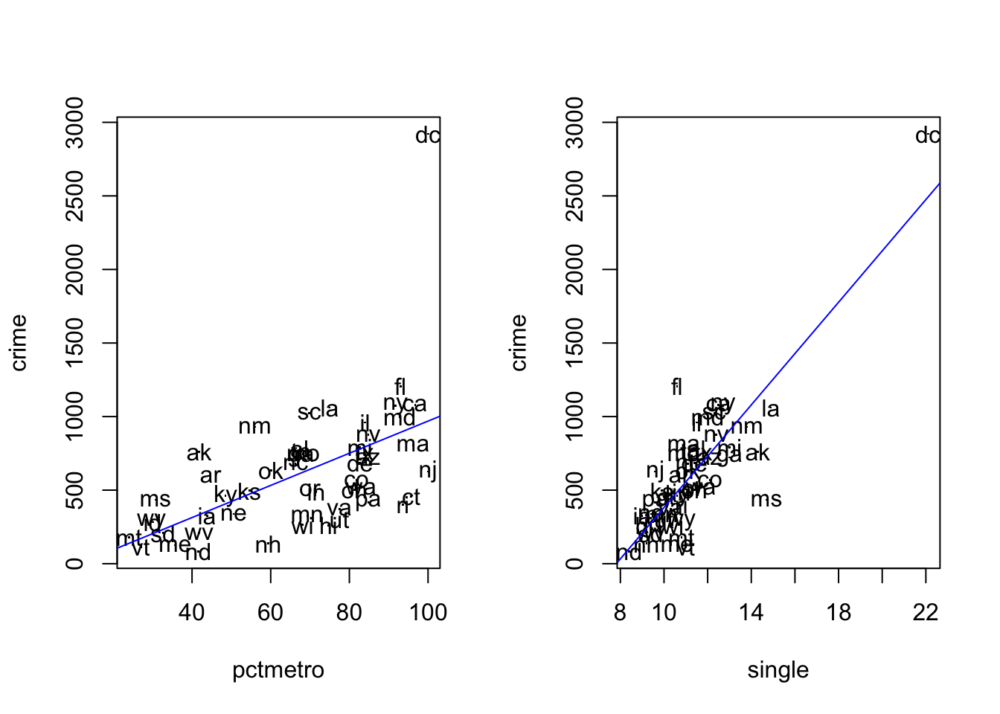
From the plots we see that Washington D.C. is an outlier. One must be careful with regression analysis.
1b)
Do a regression analysis with crime rate as the dependent variable and percentage metropolitan as the independent variable. Perform also residual analysis.
# regression: crime vs pctmetrosummary(lm(crime ~ pctmetro, data = crime_data))
Call:
lm(formula = crime ~ pctmetro, data = crime_data)
Residuals:
Min 1Q Median 3Q Max
-497.30 -226.15 -24.61 133.02 1952.76
Coefficients:
Estimate Std. Error t value Pr(>|t|)
(Intercept) -123.683 170.511 -0.725 0.472
pctmetro 10.929 2.408 4.539 3.69e-05 ***
---
Signif. codes: 0 '***' 0.001 '**' 0.01 '*' 0.05 '.' 0.1 ' ' 1
Residual standard error: 373.9 on 49 degrees of freedom
Multiple R-squared: 0.296, Adjusted R-squared: 0.2816
F-statistic: 20.6 on 1 and 49 DF, p-value: 3.685e-05
# residual analysis:par(mfrow=c(2,2))plot(lm(crime ~ pctmetro, data = crime_data))
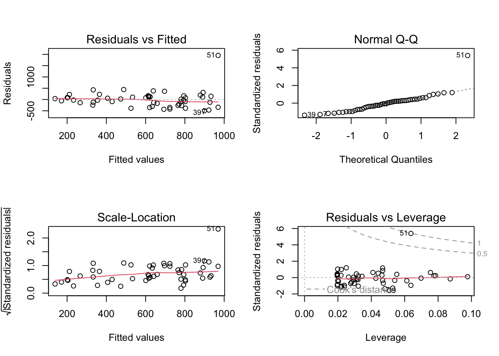
The explained variation is not so large, even though the predictor is highly significant. When checking residuals, we realize that they deviate quite consistently from the normal distribution (there is clearly an outlier). The analysis cannot be trusted.
1c)
Next, do a regression analysis with percentage single parents as the independent variable. Perform the residual analysis.
# regression: crime vs singlesummary(lm(crime ~ single, data = crime_data))
Call:
lm(formula = crime ~ single, data = crime_data)
Residuals:
Min 1Q Median 3Q Max
-767.42 -116.82 -20.58 125.28 719.70
Coefficients:
Estimate Std. Error t value Pr(>|t|)
(Intercept) -1362.53 186.23 -7.316 2.15e-09 ***
single 174.42 16.17 10.788 1.53e-14 ***
---
Signif. codes: 0 '***' 0.001 '**' 0.01 '*' 0.05 '.' 0.1 ' ' 1
Residual standard error: 242.5 on 49 degrees of freedom
Multiple R-squared: 0.7037, Adjusted R-squared: 0.6977
F-statistic: 116.4 on 1 and 49 DF, p-value: 1.529e-14
# residual analysis:par(mfrow=c(2,2))plot(lm(crime ~ single, data = crime_data))
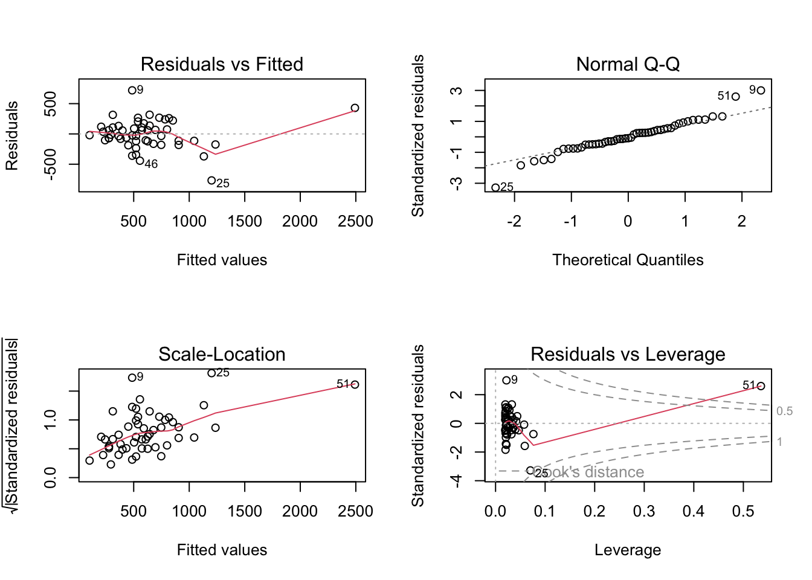
Now the fit looks much better: the explained variation is a lot larger, and the predictor is highly significant. Also the residuals look okay. What has changed from the analysis at the previous task?
1d)
Finally, have a look at the fourth plot of the regression diagnostics plots from tasks b) and c), which shows Residuals vs Leverage. Interpret the results in terms of an analysis of potential influence points.
From both plots it is evident that Washington D.C. (row number 51) has way too strong leverage on the models, and hence should be removed.
After removing this outlier (e.g. via index and which()), we refit the simple linear regression for crime vs percentage metropolitan, and get the following output:
# regression: crime vs pctmetrosummary(lm(crime ~ pctmetro, data = crime_data[which(crime_data$state !='dc'),]))
Call:
lm(formula = crime ~ pctmetro, data = crime_data[which(crime_data$state !=
"dc"), ])
Residuals:
Min 1Q Median 3Q Max
-382.45 -182.81 1.09 163.98 450.40
Coefficients:
Estimate Std. Error t value Pr(>|t|)
(Intercept) 25.558 111.117 0.230 0.819
pctmetro 8.108 1.585 5.115 5.44e-06 ***
---
Signif. codes: 0 '***' 0.001 '**' 0.01 '*' 0.05 '.' 0.1 ' ' 1
Residual standard error: 240.5 on 48 degrees of freedom
Multiple R-squared: 0.3528, Adjusted R-squared: 0.3393
F-statistic: 26.16 on 1 and 48 DF, p-value: 5.44e-06
Call:
lm(formula = crime ~ pctmetro, data = crime_subset)
Residuals:
Min 1Q Median 3Q Max
-386.26 -181.21 -5.05 167.71 456.76
Coefficients:
Estimate Std. Error t value Pr(>|t|)
(Intercept) 4.058 116.042 0.035 0.972
pctmetro 8.378 1.642 5.103 5.93e-06 ***
---
Signif. codes: 0 '***' 0.001 '**' 0.01 '*' 0.05 '.' 0.1 ' ' 1
Residual standard error: 241.8 on 47 degrees of freedom
Multiple R-squared: 0.3565, Adjusted R-squared: 0.3428
F-statistic: 26.04 on 1 and 47 DF, p-value: 5.933e-06
plot(fit)
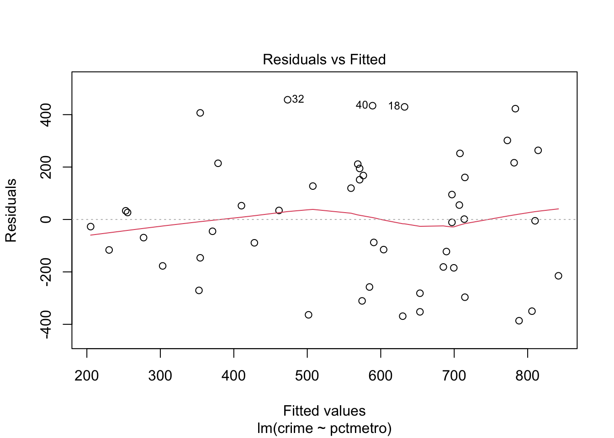
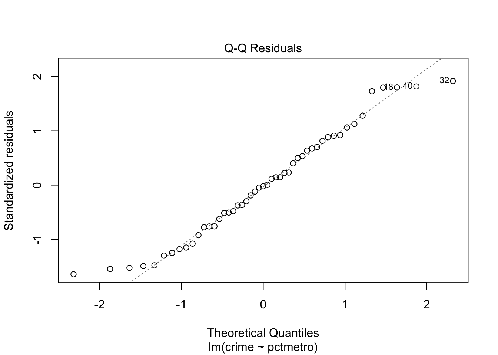
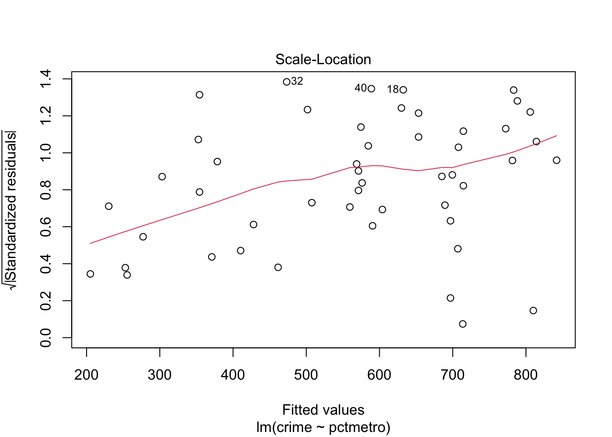
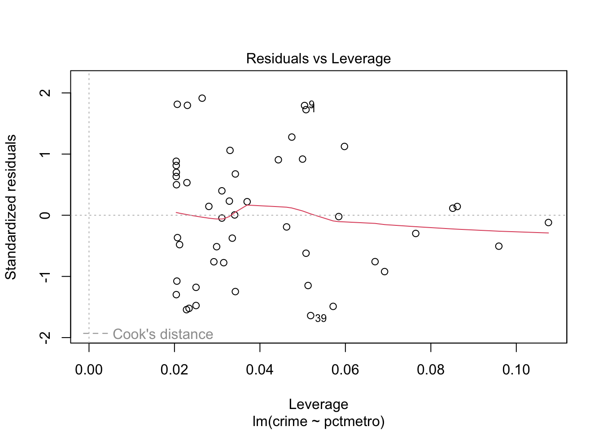
# residual analysis:par(mfrow=c(2,2))plot(lm(crime ~ pctmetro, data = crime_data[which(crime_data$state !='dc'),]))
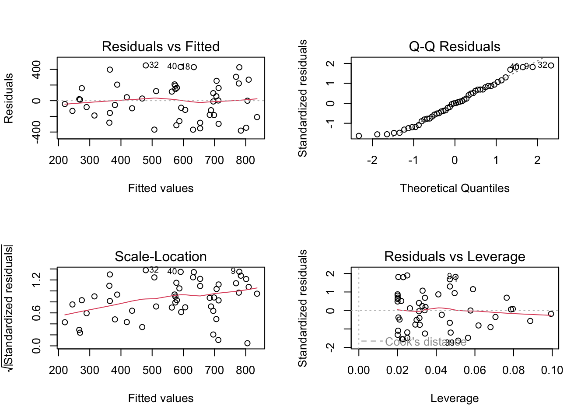
Now the predictor is still significant, but the explained variation increased from 29.6% to 35.3%. Also normal probability plot of the residuals and leverage plot look much better now.
Let us check the model for crime vs percentage of single parents:
# regression: crime vs singlesummary(lm(crime ~ single, data = crime_data[which(crime_data$state !='dc'),]))
Call:
lm(formula = crime ~ single, data = crime_data[which(crime_data$state !=
"dc"), ])
Residuals:
Min 1Q Median 3Q Max
-599.75 -127.40 -12.87 111.62 705.70
Coefficients:
Estimate Std. Error t value Pr(>|t|)
(Intercept) -878.86 246.90 -3.560 0.000849 ***
single 130.11 22.03 5.905 3.5e-07 ***
---
Signif. codes: 0 '***' 0.001 '**' 0.01 '*' 0.05 '.' 0.1 ' ' 1
Residual standard error: 227.5 on 48 degrees of freedom
Multiple R-squared: 0.4208, Adjusted R-squared: 0.4087
F-statistic: 34.87 on 1 and 48 DF, p-value: 3.499e-07
# residual analysis:par(mfrow=c(2,2))plot(lm(crime ~ single, data = crime_data[which(crime_data$state !='dc'),]))
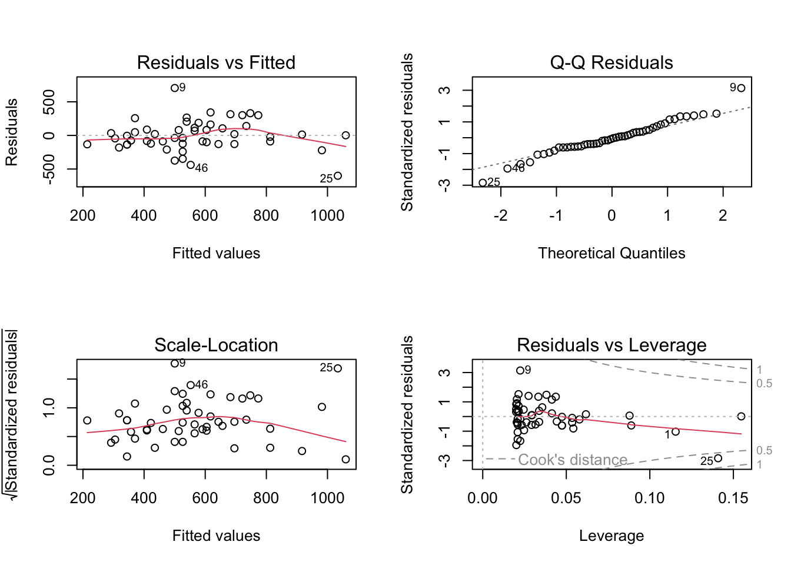
In this case, instead, even if the predictor is still highly significant, the explained variation is much smaller! (and the predictor coefficient changed from 174 to 130, huge effect of a single data point). This is because, differently from the previous analysis, the outlier was improving the regression fit by driving the entire analysis.
Normal probability plot of the residuals and leverage analysis help us verify that we now solved the issue in this analysis as well. In order to be extremely careful, we should do a scatter plot of crime vs single for the data without Washington D.C., and check whether MS (row number 25) is another leverage point/ outlier. Try!
Exercise 2 (birth).
In a study in Massachusetts, USA, birth weight was measured for the children of 189 women. The main variable in the study was birth weight, bwt, which is an important indicator of the condition of a newborn child. Low birth weight (below 2500 g) may be a medical risk factor. A major question is whether smoking during pregnancy influences the birth weight. One has also studied whether a number of other factors are related to birth weight, such as hypertension in the mother.
The variables of the study are
Identification number (id)
Low birth weight (low), i.e. bwt below or above 2500g
Age of the mother in years (age)
Weight (in pounds) at last menstrual period (lwt)
Ethnicity: white, black, or other (eth)
Smoking status, smoker means current smoker, nonsmoker means not smoking during pregnancy (smk)
History of premature labour, values 0, 1, 2… (ptl)
History of hypertension: yes vs no (ht)
Uterine irritability, yes vs no (ui)
First trimester visits, values 0, 1, 2… (ftv)
Third trimester visits, values 0, 1, 2… (ttv)
Birth weight in grams (bwt)
2a)
Make scatter plots of birth weight (bwt) versus age of the mother (age), and versus weight of mother (lwt). Edit the scatter plots to insert a regression line.
birth <-read.csv('data/birth.csv')# head(birth)par(mfrow =c(1, 2)) # make plots in 1 row 2 col# scatter plots:plot(bwt ~ age, data = birth)abline(lm(bwt ~ age, data = birth), col ='blue')plot(bwt ~ lwt, data = birth)abline(lm(bwt ~ lwt, data = birth), col ='blue')
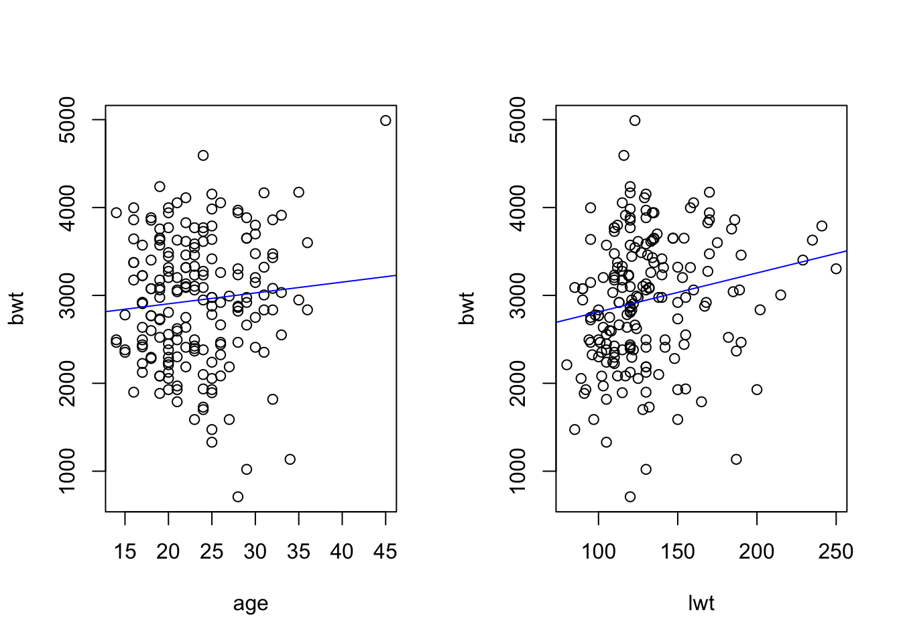
Make also separate regression lines for smokers and non-smokers. Interpret the results.
par(mfrow =c(2, 2)) # make plots in 2 row 2 col# scatter plots separate for smokers and non-smokers:plot(bwt ~ age, data = birth[which(birth$smk =='smoker'),], main="Smokers")abline(lm(bwt ~ age, data = birth[which(birth$smk =='smoker'),]), col ='blue')plot(bwt ~ age, data = birth[which(birth$smk =='nonsmoker'),], main="Non-smokers")abline(lm(bwt ~ age, data = birth[which(birth$smk =='nonsmoker'),]), col ='blue')plot(bwt ~ lwt, data = birth[which(birth$smk =='smoker'),], main="Smokers")abline(lm(bwt ~ lwt, data = birth[which(birth$smk =='smoker'),]), col ='blue')plot(bwt ~ lwt, data = birth[which(birth$smk =='nonsmoker'),], main="Non-smokers")abline(lm(bwt ~ lwt, data = birth[which(birth$smk =='nonsmoker'),]), col ='blue')
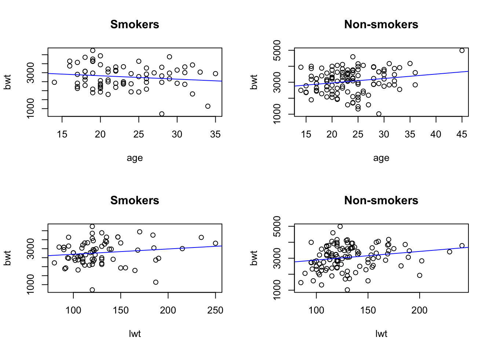
We can comment the four plots above as follows:
Smoking mothers tend to have newborns with lower birthweight.
Birthweight increases with the mother’s age only for non-smokers, while in the smoking mothers group the relationship is reverted.
Birthweight increases with the weight of the mother, but less in the smoking group.
2b)
Compute the correlation between birth weight and weight of mother.
cor.test(~ bwt + lwt, data = birth)
Pearson's product-moment correlation
data: bwt and lwt
t = 2.5856, df = 187, p-value = 0.01048
alternative hypothesis: true correlation is not equal to 0
95 percent confidence interval:
0.04423134 0.32003247
sample estimates:
cor
0.1857887
The correlation is not so large (18.6%), but significantly different from 0 at the 5% level (p = 0.01).
2c)
Make boxplots of birth weight for smokers and non-smokers separately.
boxplot(bwt ~ smk, data = birth)
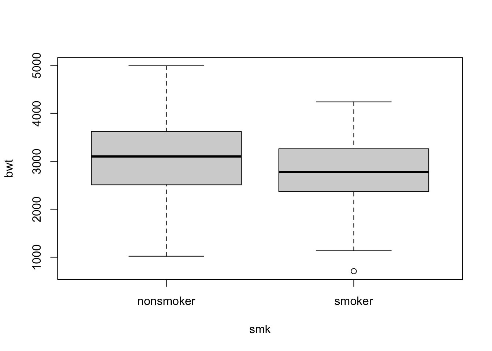
The plot indicates some negative effect of smoking on birthweight.
2d)
Let us perform regression analyses with birth weight as the dependent variable. First, use only smoking as an independent variable.
# regressionsummary(lm(bwt ~ smk, data = birth))
Call:
lm(formula = bwt ~ smk, data = birth)
Residuals:
Min 1Q Median 3Q Max
-2064.24 -477.24 35.04 545.04 1935.04
Coefficients:
Estimate Std. Error t value Pr(>|t|)
(Intercept) 3054.96 66.93 45.642 < 2e-16 ***
smksmoker -281.71 106.97 -2.634 0.00916 **
---
Signif. codes: 0 '***' 0.001 '**' 0.01 '*' 0.05 '.' 0.1 ' ' 1
Residual standard error: 717.8 on 187 degrees of freedom
Multiple R-squared: 0.03576, Adjusted R-squared: 0.03061
F-statistic: 6.936 on 1 and 187 DF, p-value: 0.009156
Note the low explained variation, 3.6%, in spite of smoking being important. This is very often the case when the independent variable is dichotomous (i.e. has only two values). Let us then fit a multiple linear regression.
In the second analysis, use also weight of mother as an independent variable. Interpret the results in relation to the earlier results of this exercise.
# scatter plots:summary(lm(bwt ~ smk + lwt, data = birth))
Call:
lm(formula = bwt ~ smk + lwt, data = birth)
Residuals:
Min 1Q Median 3Q Max
-2030.16 -447.00 27.74 514.20 1968.51
Coefficients:
Estimate Std. Error t value Pr(>|t|)
(Intercept) 2500.174 230.833 10.831 <2e-16 ***
smksmoker -270.013 105.590 -2.557 0.0114 *
lwt 4.238 1.690 2.508 0.0130 *
---
Signif. codes: 0 '***' 0.001 '**' 0.01 '*' 0.05 '.' 0.1 ' ' 1
Residual standard error: 707.8 on 186 degrees of freedom
Multiple R-squared: 0.06731, Adjusted R-squared: 0.05728
F-statistic: 6.711 on 2 and 186 DF, p-value: 0.001533
Some comments:
The explained variation is slightly larger than in the previous model (6.7%).
Smoking is still highly significant.
Mother’s weight is significant, but the coefficient is not large.
Residuals are fine.
And finally, in a third analysis, add smoking, weight of the mother and ethnicity.
This model looks a lot better than the ones before! The explained variation is larger (14.8%), and all predictors are significant.
Remember to check the residuals before concluding. The residuals look in line with the regression assumption of normality, so we can conclude that this final model is the best.
Source Code
---title: "Solutions - Linear regression III"description: "Multiple regression (continued)"format: html: code-fold: false code-tools: trueeditor: source---Datasets* Exercise 1: `crime_mod` ([rda link](https://github.com/ocbe-uio/teaching_mf9130e/blob/main/lab/data/crime_mod.rda), [csv link](https://github.com/ocbe-uio/teaching_mf9130e/blob/main/lab/data/crime_mod.csv))* Exercise 2: `birth` ([rda link](https://github.com/ocbe-uio/teaching_mf9130e/blob/main/lab/data/birth.rda), [csv link](https://github.com/ocbe-uio/teaching_mf9130e/blob/main/lab/data/birth.csv))[R Script](https://github.com/ocbe-uio/teaching_mf9130e/blob/main/lab/code/8_linearreg-III.R)------------------# Examples (exercises with solution)## Exercise 1 (crime rate data). This data set contains crime rate data for the individual US states, including District of Columbia (Washington D.C.), coded in the variable `state`. The variables are violent crime rate (`crime`), murder rate (`murder`), percentage metropolitan (`pctmetro`), percentage high school graduates (`pcths`), percentage poverty (`poverty`), percentage single parents (`single`).#### 1a)Make scatter plots with violent crime rate on the y-axis and percentage metropolitan or percentage single parents on the x-axis. Mark each point by the state initials. Insert regression lines in each of the diagrams. Comment on the diagram. You see that Washington D.C. (dc) has a particularly high crime rate.*Note: One way how you can add labels (e.g. the state initials) to the data points in a scatter plot is to use the command `text()`, like so: `text(y ~ x, labels = lab)`, where `x` and `y` are the variables on the x- and y-axis in the scatterplot and `lab` is the variable that we want to use for the labels.*```{r}#| label: linear-1a-1#| warning: false#| echo: truecrime_data <-read.csv('data/crime_mod.csv')# head(crime_data)par(mfrow =c(1, 2)) # make plots in 1 row 2 col# scatter plot: crime vs pctmetroplot(crime ~ pctmetro, pch=".", data = crime_data)text(crime ~ pctmetro, labels = state, data = crime_data)abline(lm(crime ~ pctmetro, data = crime_data), col ='blue')# scatter plot: crime vs singleplot(crime ~ single, pch='.', data = crime_data)text(crime ~ single, labels = state, data = crime_data)abline(lm(crime ~ single, data = crime_data), col ='blue')```From the plots we see that Washington D.C. is an outlier. One must be careful with regression analysis.#### 1b)Do a regression analysis with crime rate as the dependent variable and percentage metropolitan as the independent variable. Perform also residual analysis.```{r}#| label: linear-1b-1#| warning: false#| echo: true# regression: crime vs pctmetrosummary(lm(crime ~ pctmetro, data = crime_data))# residual analysis:par(mfrow=c(2,2))plot(lm(crime ~ pctmetro, data = crime_data))```The explained variation is not so large, even though the predictor is highly significant. When checking residuals, we realize that they deviate quite consistently from the normal distribution (there is clearly an outlier). The analysis cannot be trusted.#### 1c)Next, do a regression analysis with percentage single parents as the independent variable. Perform the residual analysis.```{r}#| label: linear-1c-1#| warning: false#| echo: true# regression: crime vs singlesummary(lm(crime ~ single, data = crime_data))# residual analysis:par(mfrow=c(2,2))plot(lm(crime ~ single, data = crime_data))```Now the fit looks much better: the explained variation is a lot larger, and the predictor is highly significant. Also the residuals look okay. What has changed from the analysis at the previous task?#### 1d)Finally, have a look at the fourth plot of the regression diagnostics plots from tasks b) and c), which shows Residuals vs Leverage. Interpret the results in terms of an analysis of potential influence points.From both plots it is evident that Washington D.C. (row number 51) has way too strong leverage on the models, and hence should be removed.After removing this outlier (e.g. via index and `which()`), we refit the simple linear regression for crime vs percentage metropolitan, and get the following output:```{r}#| label: linear-1d-1#| warning: false#| echo: true# regression: crime vs pctmetrosummary(lm(crime ~ pctmetro, data = crime_data[which(crime_data$state !='dc'),]))ids <- crime_data$state !='dc'& crime_data$state !='ms'which.ids <-which(ids)crime_subset <- crime_data[which.ids, ]fit <-lm(crime ~ pctmetro, data = crime_subset)summary(fit)plot(fit)# residual analysis:par(mfrow=c(2,2))plot(lm(crime ~ pctmetro, data = crime_data[which(crime_data$state !='dc'),]))```Now the predictor is still significant, but the explained variation increased from 29.6\% to 35.3\%. Also normal probability plot of the residuals and leverage plot look much better now.Let us check the model for crime vs percentage of single parents:```{r}#| label: linear-1d-2#| warning: false#| echo: true# regression: crime vs singlesummary(lm(crime ~ single, data = crime_data[which(crime_data$state !='dc'),]))# residual analysis:par(mfrow=c(2,2))plot(lm(crime ~ single, data = crime_data[which(crime_data$state !='dc'),]))```In this case, instead, even if the predictor is still highly significant, the explained variation is much smaller! (and the predictor coefficient changed from 174 to 130, huge effect of a single data point). This is because, differently from the previous analysis, the outlier was improving the regression fit by driving the entire analysis.Normal probability plot of the residuals and leverage analysis help us verify that we now solved the issue in this analysis as well. In order to be extremely careful, we should do a scatter plot of crime vs single for the data without Washington D.C., and check whether MS (row number 25) is another leverage point/ outlier. Try!## Exercise 2 (birth). In a study in Massachusetts, USA, birth weight was measured for the children of 189 women. The main variable in the study was birth weight, `bwt`, which is an important indicator of the condition of a newborn child. Low birth weight (below 2500 g) may be a medical risk factor. A major question is whether smoking during pregnancy influences the birth weight. One has also studied whether a number of other factors are related to birth weight, such as hypertension in the mother. The variables of the study are* Identification number (id) * Low birth weight (low), i.e. bwt below or above 2500g * Age of the mother in years (age) * Weight (in pounds) at last menstrual period (lwt) * Ethnicity: white, black, or other (eth) * Smoking status, `smoker` means current smoker, `nonsmoker` means not smoking during pregnancy (smk) * History of premature labour, values 0, 1, 2... (ptl) * History of hypertension: yes vs no (ht) * Uterine irritability, yes vs no (ui) * First trimester visits, values 0, 1, 2... (ftv) * Third trimester visits, values 0, 1, 2... (ttv) * Birth weight in grams (bwt) #### 2a)Make scatter plots of birth weight (`bwt`) versus age of the mother (`age`), and versus weight of mother (`lwt`). Edit the scatter plots to insert a regression line. ```{r}#| label: linear-2a-1#| warning: false#| echo: truebirth <-read.csv('data/birth.csv')# head(birth)par(mfrow =c(1, 2)) # make plots in 1 row 2 col# scatter plots:plot(bwt ~ age, data = birth)abline(lm(bwt ~ age, data = birth), col ='blue')plot(bwt ~ lwt, data = birth)abline(lm(bwt ~ lwt, data = birth), col ='blue')```Make also separate regression lines for smokers and non-smokers. Interpret the results.```{r}#| label: linear-2a-2#| warning: false#| echo: truepar(mfrow =c(2, 2)) # make plots in 2 row 2 col# scatter plots separate for smokers and non-smokers:plot(bwt ~ age, data = birth[which(birth$smk =='smoker'),], main="Smokers")abline(lm(bwt ~ age, data = birth[which(birth$smk =='smoker'),]), col ='blue')plot(bwt ~ age, data = birth[which(birth$smk =='nonsmoker'),], main="Non-smokers")abline(lm(bwt ~ age, data = birth[which(birth$smk =='nonsmoker'),]), col ='blue')plot(bwt ~ lwt, data = birth[which(birth$smk =='smoker'),], main="Smokers")abline(lm(bwt ~ lwt, data = birth[which(birth$smk =='smoker'),]), col ='blue')plot(bwt ~ lwt, data = birth[which(birth$smk =='nonsmoker'),], main="Non-smokers")abline(lm(bwt ~ lwt, data = birth[which(birth$smk =='nonsmoker'),]), col ='blue')```We can comment the four plots above as follows: - Smoking mothers tend to have newborns with lower birthweight. - Birthweight increases with the mother's age only for non-smokers, while in the smoking mothers group the relationship is reverted. - Birthweight increases with the weight of the mother, but less in the smoking group. #### 2b)Compute the correlation between birth weight and weight of mother.```{r}#| label: linear-2b-1#| warning: false#| echo: truecor.test(~ bwt + lwt, data = birth)```The correlation is not so large (18.6\%), but significantly different from 0 at the 5\% level (p = 0.01).#### 2c)Make boxplots of birth weight for smokers and non-smokers separately.```{r}#| label: linear-2c-1#| warning: false#| echo: trueboxplot(bwt ~ smk, data = birth)```The plot indicates some negative effect of smoking on birthweight.#### 2d)Let us perform regression analyses with birth weight as the dependent variable. First, use only smoking as an independent variable. ```{r}#| label: linear-2d-1#| warning: false#| echo: true# regressionsummary(lm(bwt ~ smk, data = birth))```Note the low explained variation, 3.6\%, in spite of smoking being important. This is very often the case when the independent variable is dichotomous (i.e. has only two values). Let us then fit a multiple linear regression.In the second analysis, use also weight of mother as an independent variable. Interpret the results in relation to the earlier results of this exercise.```{r}#| label: linear-2d-2#| warning: false#| echo: true# scatter plots:summary(lm(bwt ~ smk + lwt, data = birth))```Some comments:- The explained variation is slightly larger than in the previous model (6.7\%). - Smoking is still highly significant. - Mother's weight is significant, but the coefficient is not large. - Residuals are fine. And finally, in a third analysis, add smoking, weight of the mother and ethnicity.```{r}#| label: linear-2d-3#| warning: false#| echo: true# scatter plots:summary(lm(bwt ~ smk + lwt + eth, data = birth))# residual analysis:par(mfrow=c(2,2))plot(lm(bwt ~ smk + lwt + eth, data = birth))```This model looks a lot better than the ones before! The explained variation is larger (14.8\%), and all predictors are significant. Remember to check the residuals before concluding. The residuals look in line with the regression assumption of normality, so we can conclude that this final model is the best.